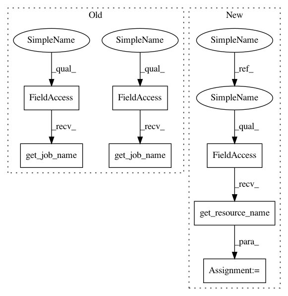

3f2623f982d5d77a4dee29acf0d931473bc024e1,polyaxon/scheduler/spawners/dockerizer_spawner.py,DockerizerSpawner,start_dockerizer,#DockerizerSpawner#Any#Any#Any#Any#,76
Before Change
env_vars = self.get_env_vars()
pod = self.pod_manager.get_pod(
job_name=self.pod_manager.get_job_name(),
volume_mounts=volume_mounts,
volumes=volumes,
labels=self.pod_manager.labels,
env_vars=env_vars,
command=None,
args=[self.job_uuid],
persistence_outputs=None,
persistence_data=None,
outputs_refs_jobs=None,
outputs_refs_experiments=None,
secret_refs=None,
configmap_refs=None,
resources=resources,
ephemeral_token=None,
node_selector=node_selector,
affinity=affinity,
tolerations=tolerations,
restart_policy="Never")
pod_resp, _ = self.create_or_update_pod(name=self.pod_manager.get_job_name(), data=pod)
return pod_resp.to_dict()
def stop_dockerizer(self):
After Change
return env_vars
def start_dockerizer(self,
resources=None,
node_selector=None,
affinity=None,
tolerations=None):
volumes, volume_mounts = get_docker_volumes()
env_vars = self.get_env_vars()
resource_name = self.resource_manager.get_resource_name()
pod = self.resource_manager.get_pod(
resource_name=resource_name,
volume_mounts=volume_mounts,
volumes=volumes,
In pattern: SUPERPATTERN
Frequency: 3
Non-data size: 7
Instances
Project Name: polyaxon/polyaxon
Commit Name: 3f2623f982d5d77a4dee29acf0d931473bc024e1
Time: 2019-01-25
Author: mouradmourafiq@gmail.com
File Name: polyaxon/scheduler/spawners/dockerizer_spawner.py
Class Name: DockerizerSpawner
Method Name: start_dockerizer
Project Name: polyaxon/polyaxon
Commit Name: 3f2623f982d5d77a4dee29acf0d931473bc024e1
Time: 2019-01-25
Author: mouradmourafiq@gmail.com
File Name: polyaxon/scheduler/spawners/notebook_spawner.py
Class Name: NotebookSpawner
Method Name: start_notebook
Project Name: polyaxon/polyaxon
Commit Name: 3f2623f982d5d77a4dee29acf0d931473bc024e1
Time: 2019-01-25
Author: mouradmourafiq@gmail.com
File Name: polyaxon/scheduler/spawners/job_spawner.py
Class Name: JobSpawner
Method Name: start_job
Project Name: polyaxon/polyaxon
Commit Name: 3f2623f982d5d77a4dee29acf0d931473bc024e1
Time: 2019-01-25
Author: mouradmourafiq@gmail.com
File Name: polyaxon/scheduler/spawners/dockerizer_spawner.py
Class Name: DockerizerSpawner
Method Name: start_dockerizer